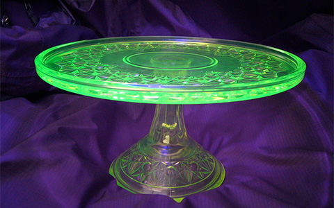
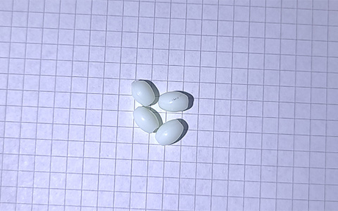
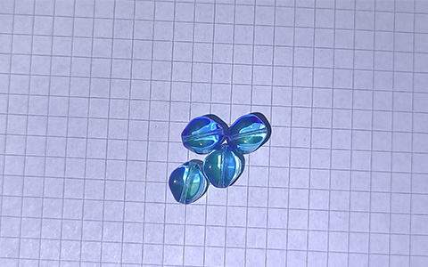
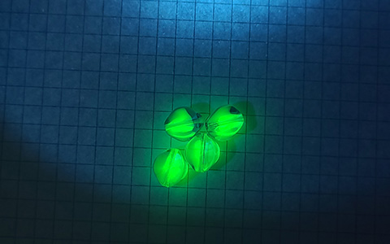
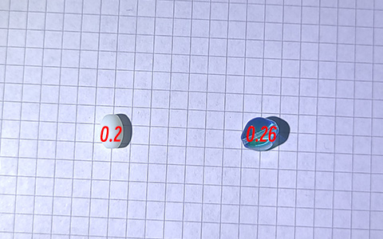

蛋白石铀玻璃和钴铀玻璃
Author: Xiao Yi | Category: Uranium Glass,UV 铀玻璃通常是透明的，没有任何添加剂，它应该是柠檬黄色，但铁的化合物混合会呈现绿色。有时它也是蜂蜜色或海洋色。
凡士林玻璃是一种特殊的玻璃，它是通过对熔融玻璃块进行回火而形成的。在英文文献中，尤其是美国文献中，凡士林玻璃一词通常指一般的铀玻璃，尽管这并不准确。另一种是绿玉石玻璃，也叫牛奶玻璃或蛋白石铀玻璃。
形成这种颜色的方式主要为向玻璃中加入遮光剂如 TiO2
这样的着色通常不会影响其在紫外线下发出荧光的特性:

这种形式的铀玻璃并不常见，它们可以被归类为缅甸玻璃的一种分支，即 不透明玻璃，但普通缅甸玻璃通常是淡黄色至粉色的。
另一种我最近找到的样品是一种钴铀玻璃:
荧光：
这种形态的铀玻璃算不上稀有，依旧让人着迷。
此外，如果你想判断一种玻璃是不是铀玻璃，最好且最有效的方法是测量它们的剂量率，而不是使用紫外线灯，至于原因，这个我们以后再谈
我测量了β+γ的剂量率（高估），单个的活性很低，即略高于自然本底 (0.10-0.20 µSv/h)：
安全
最后，再一次，安全问题。铀玻璃发出的辐射能量低，射程短。即使有更多的铀玻璃，留在附近也不会构成威胁，因为辐射会随着距离的增加而迅速减弱（与其平方成正比）。
将这种玻璃拿在手里是 100% 安全的，不会对健康造成任何影响——α粒子无法穿透表皮外层，低能量的β粒子也是如此，而四肢可以接受高剂量的辐射。
0 Comments